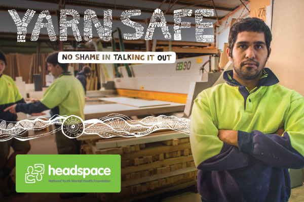
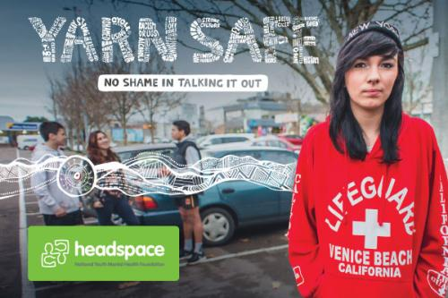
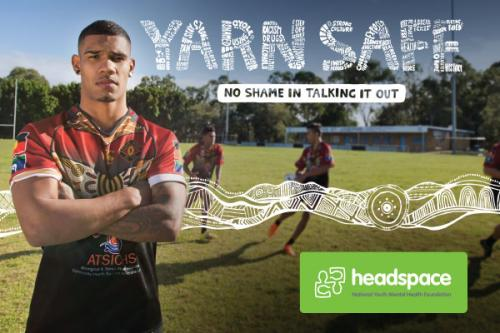
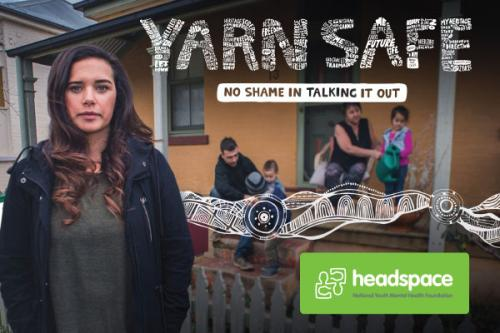
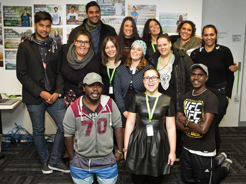

Yarn Safe

Is there a lot going on? If you feel like there is too much happening clearing your head can help. There is no shame in talking it out. headspace is your space to yarn safe.
Your wellbeing is influenced by a whole range of things including physical wellbeing, mental wellbeing, family and relationships, connections with community, cultural values, connections to place and maintaining spirit.
A person who has a good emotional and social wellbeing is able to cope with change and challenges.
Feeling down, sad, tense, angry or anxious are all normal emotions, but when these feelings persist for long periods of time, they can have an effect on your overall functioning and wellbeing.
You may notice changes in how you are feeling and thinking which might include:
- Changes in appetite, sleeping patterns or the way that you carry out your day-to-day life
- Having negative, distressing or unusual thoughts or feeling unusually stressed or worried
- Being easily irritated or having problems with friends and family for no reason
- Being involved in risky behaviour that you would usually avoid, like taking drugs or drinking too much alcohol, or depending on these substances to feel “normal”
You may notice changes in how you are feeling and thinking which might include:
- Finding your performance at school, TAFE, university or work is not as good as it used to be
- Feeling sad or ‘down’ or crying for no apparent reason
- Not enjoying, or not wanting to be involved in things that you would normally enjoy
- Having trouble concentrating or remembering things
Got a lot going on? Clearing your head can help. There is no shame in talking it out. Aged 12-25? headspace. Your space. Yarn Safe.
Feeling overwhelmed?

Every day we are faced with situations that can make us feel stressed and/or pressured. There's the pressure to fit in or to do really well. And sometimes, we might be told to do things that we can't be bothered with or don't really want to do.
Dealing with day-to-day pressures can mess with your mind. You can start to feel lost, worried, uncomfortable or overwhelmed. These feelings may start to bottle up and the more you let them, the more they can have an effect on your emotional and social wellbeing.
Some things you can do to help with feelings of stress and pressure include:
- Eating well – having a good balanced diet
- Sleeping well – developing a healthy sleeping routine
- Engaging in physical activity – even small activities like walking can help relieve stress
- Keep connected with your community, culture and land – it’s okay to take time out for yourself but friends and family can provide support when you need it
Some things you can do to help with feelings of stress and pressure include:
- Setting realistic goals – goals can be motivating and can help build self-confidence
- Relaxing – there are a number of things you can do so find out what relaxes you and try doing that
- Change what you say to yourself – replace your negative thoughts with more realistic ones.
Got a lot going on? Clearing your head can help. There is no shame in talking it out. Aged 12-25? headspace. Your space. Yarn Safe.
Are alcohol and drugs getting in the way?
When things get out of control, you might turn to drugs and alcohol as a way of coping or distracting yourself from what's going on. Other times, you might feel pressured by your mates to drink or take drugs because they're all doing it.
While this might seem like a good option at the time, alcohol and drugs can impact on your coordination, judgement and response time. Over time use of drugs and alcohol can have an effect on your mood and lead to problems with your emotional and social wellbeing.
If you are going to drink or take drugs, there will always be a risk of bad things happening. You can reduce some of these risks by:
- Going low, going slow. Just use a bit at a time and wait to see what it feels like before taking more.
- Not mixing with other drugs or alcohol – it can get out of control quickly.
- Only using with people you trust. It’s good if someone in your group isn’t using to keep an eye on you.
- Calling an ambulance if things get bad.
For some people, drinking and/or taking drugs can get out of control and cause harm to themselves and others.
If you are going to drink or take drugs, there will always be a risk of bad things happening. You can reduce some of these risks by:
- Never sharing needles.
- Making sure that you eat, even if you don’t feel like it.
- Take a break. Make sure that you have drug and alcohol free days and try not to use them before anything big (e.g. exams, work).
Got a lot going on? Clearing your head can help. There is no shame in talking it out. Aged 12-25? headspace. Your space. Yarn Safe.
Family and relationships

The relationships we have with friends, boyfriends/girlfriends, family, teachers and workmates impacts our emotional and social wellbeing. If relationships are positive then they can provide us with a feeling of being respected and cared for. They can help you get through tough times and provide advice when you need it.
However sometimes, relationships can go wrong. When relationships break down, if you have a falling out or feel pressured into doing things you don't want to, you might feel upset, have less motivation to do things or lose your appetite or sleep.
Relationships, be it with family, partners or others in the community that are abusive, either physically, sexually, emotionally, spiritually or financially are not okay. There is help available to you if you are in an abusive relationship.
It's important to maintain a healthy relationship but also know what to do when a relationship goes wrong.
When a relationship goes wrong, it’s important to speak openly and honestly with each other to express how you feel, hear where the other person is coming from and put your heads together to think about what steps you can take in the relationship.
If relationship issues are getting in the way of your daily life it is important to get support and to ask for help.
Clearing your head can help. There is no shame in talking it out. Aged 12-25? headspace. Your space. Yarn Safe.
About Yarn Safe

Yarn Safe was developed in September 2014 with the help of 12 incredible Aboriginal and Torres Strait Islander young people from across Australia, who have continued to be involved in the campaign development.
Following the release of the campaign headspace has seen a dramatic 32 per cent increase in the number of Aboriginal and Torres Strait Islander young people accessing support at its centres.
The campaign moves in to the second phase this October 2015, aiming to raise awareness of mental health issues and encourages young Aboriginal and Torres Strait Islanders to seek help at headspace, or other appropriate mental health services.
Find out more about the campaign below:
- Read our media release on the results and next phase of the Yarn Safe campaign
- Campaign background and roll out
- Who made Yarn Safe?
- Impact of the campaign
- How headspace can help
Additional resources
The Healing Foundation helps Aboriginal and Torres Strait Islander people to heal by connecting them back to culture, philosophy and spirit. Visit their website for fact sheets, reports, training material and more at http://healingfoundation.org.au/